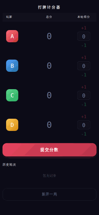

打牌计分器
一个简洁的移动端打牌（四人）记分工具，纯前端单页应用，无需后端，支持离线使用。

功能特性
- 4 位玩家：每位玩家用字母标识（默认 A/B/C/D），点击头像可自定义字母
- 滚轮输入分数：每人通过拖动滚轮选择本轮得分（范围 −20 ~ +20）
- 自动补全：当 3 位玩家已拨好分数时，第 4 位自动计算（确保总和为 0）
- 分数校验：提交前检查四人分数之和是否为 0，否则给出提示
- 历史记录：展示每轮得分，默认显示最近 5 轮，支持展开全部
- 撤销：可撤销最近一轮的提交
- 新开一局：清零所有分数（保留玩家字母）
- 本地持久化：游戏状态存储于
localStorage，刷新后恢复
- 彩纸动画：每次提交分数触发庆祝彩纸效果
- 移动端优化：触屏友好，支持 iOS Safe Area，深色主题
使用方法
直接访问在线版本即可，无需安装任何依赖：
规则说明
每轮结束后，各玩家拨动对应滚轮选择得分，四人分数之和必须为 0，然后点击「提交分数」。若只拨了 3 位玩家的分数，第 4 位会自动高亮并填入对应值。
技术栈
- 原生 HTML / CSS / JavaScript（无框架、无构建工具）
localStorage 持久化- Google Fonts（DM Mono + Noto Sans SC）